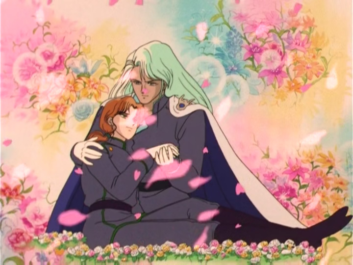

Rather than the usual monologue by Usagi explaining the overall series recap, we get a recap by Luna and Artemis explaining what happened last episode. It's easy to forget that this show was a weekly show when you're forcefeeding yourself 5 years of filler every day over two months. We finally get the first successful attack on the kings by Usagi who fucking blasts Zoisite away with the newly-upgraded Moon Stick, before finally revealing that Mamoru is Prince Endymion of the Moon Kingdom! He's Prince Endymion. Endymion. Endymion. Usagi fucking dies of semantic satiation from saying his name over and over and Tuxedo Mask literally dies from being stabbed in the back before being captured by Turquoise Daddy.
Zoisite/Kunzite has fucked up so bad that Queen Beryl literally kills Gay Jadeite right then and there as a warning to Kunzite in case he disobeys her again. This death scene is absolutely adorable; even for being a particularly bastard evil guy you really cannot help but feel bad for him here. He dies in the embrace of his lover, providing his last wish of being able to die beautifully by laying him in a highly colourful and visually beautiful bed of flowers. I'm glad the writers were able to give him the death he deserves, as opposed to Nephrite's faux-emotional death last time.
Meanwhile, in the real world, Ami starts spouting some Doctor Who-level technobabble about dimensions, complex space, or whatever else. I think this scene is one of the more visually repulsive scenes in the show, with the bright characters standing out from the excessively dark backgrounds with zero care to blend the cels properly. The colour palette is full of light and dark blues rather than the pastel turquoises that classic is most well-known for; and whilst I can understand this may be a deliberate choice to exemplify the dangerous situation the characters are in, but I feel like they could've done that whilst still keeping alive the visual identity that the show has shown thusfar. The infodump with the Silver Millenium and the Moon Kingdom keeps a lot of this ugly flat-white and flat-dark shading too, being unusually lifeless and dull compared to the normal vivid and beautiful night palettes.
Artemis gives us an infodump of how the Senshis are the reincarnated guardians of the moon, sent to live on Earth in the 20th century after losing the battle with the Dark Kingdom. Now, look. I'm not one to question the internal consistency and logical plot progression of a childrens show with 200 episodes - most of which is filler, and a lot of it is divergent from the manga due to the slow pace that the volumes released - but it doesn't really make any sense for Artemis and Venus to already know this. Surely it makes obvious sense that Sailor Moon is the Moon Princess, being the guardian of the moon! If they already knew all of this, why didn't they fill in Luna and avoid letting the Dark Kingdom rebuild?
Usagi reacts completely appropriately to the situation at hand - no, she doesn't want to fight the forces of evil. She's a kid! Who would want to! But the other Senshis get mad at her over this, including Rei who straight up slaps her for being a "crybaby", even invoking Mamoru's death as a result which is such a straight up cunty thing to do. I can understand dedicating yourself to your mission, but assaulting the person you're supposed to protect who is overwhelmed by having the weight of the universe placed on her shoulders suddenly is NOT the way to do it, especially after watching her past/future boyfriend practically die in front of her to try and save her! The Senshis then get taken out by Kunzite one-by-one which gives Usagi the motivation to finally fight as the princess and take her responsibilities series. This scene is actually a genuine tear-jerker for someone as emotionally weak as me!
Aside from the issues I mentioned, this episode is a genuinely good episode which hits the emotional cues well, provides a significant amount of tension in the important scenes, and is a completely enjoyable watch from start to finish. Sure, it's ugly and the characters (Rei) make some very poor decisions, but it's an adventure all the way throughout and a completely satisfactory ending episode to this three parter.
In the words of Luna, this completes Stage One of Sailor Moon; from hereon out, the show starts to change for the better now that we've completed the build-up and the mission is clear. If you're a rewatcher like me, you might know who the someone is that caused the Dark Kingdom to reawaken - so it's interesting that some of the show's set pieces were established all the way back in the first quarter of the show. I give this episode a 4.5/5.
{% endblock %}